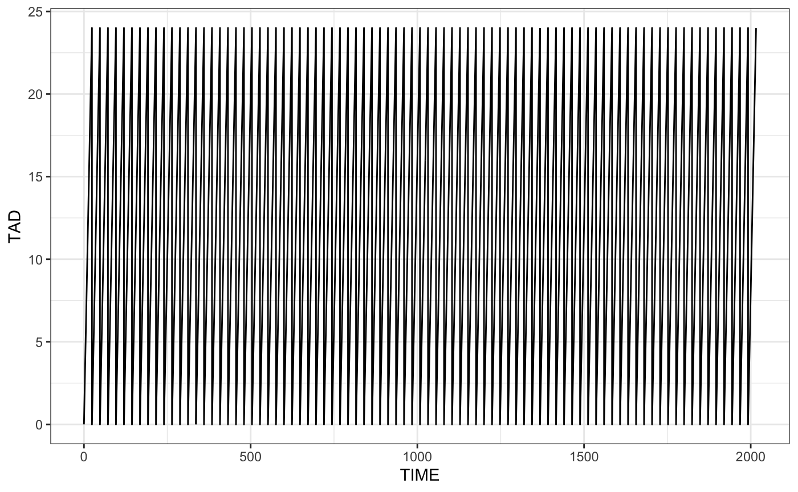
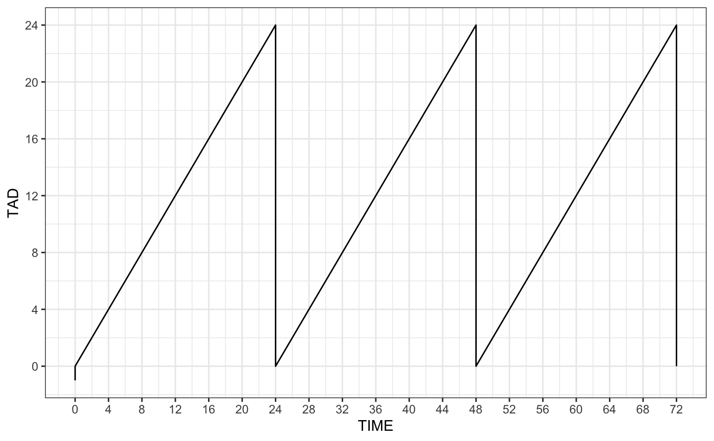

Calculate the time since and amount of the last dose. Additional (ADDL) dosing records are expanded and included in the calculation.
library(lastdose)
library(tidyverse)
theme_set(theme_bw())
file <- system.file("csv/data1.csv", package = "lastdose")
df <- read.csv(file)
head(df). ID TIME EVID AMT CMT II ADDL DV
. 1 1 0 0 0 0 0 0 0.0
. 2 1 0 1 1000 1 24 27 0.0
. 3 1 4 0 0 0 0 0 42.1
. 4 1 8 0 0 0 0 0 35.3
. 5 1 12 0 0 0 0 0 28.9
. 6 1 16 0 0 0 0 0 23.6
Plot time after dose versus time

ggplot(df, aes(TIME,TAD)) + geom_line() +
scale_x_continuous(breaks = seq(0,72,4), limits=c(0,72)) +
scale_y_continuous(breaks = seq(0,24,4), limits=c(0,24)) 
All doses explicit in the data set

ggplot(df2, aes(TIME,TAD)) + geom_line() +
scale_x_continuous(breaks = seq(0,72,4), limits = c(0,72)) +
scale_y_continuous(breaks = seq(0,24,4))